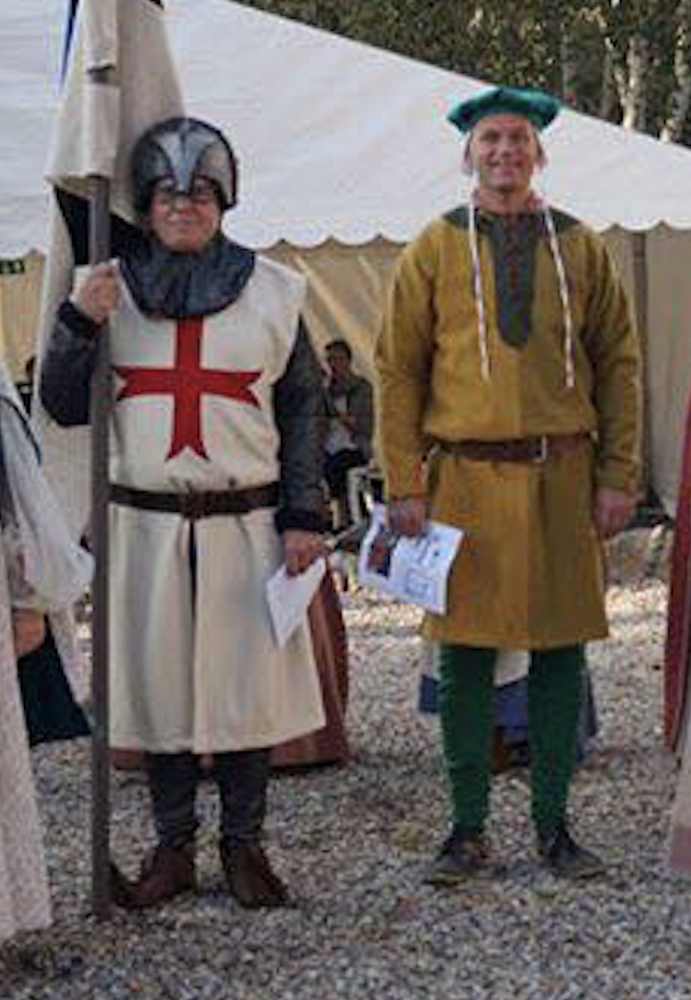

31. AUGUST - 3. SEPTEMBER
31. AUGUST - 3. SEPTEMBER


Vardes Mittelalterliches fest 2019
 Wir sind stolz darauf, das Thema des Vardes Medieval Festivals im Jahr 2019 zu präsentieren, das "Reich und Arm" ist. Wir freuen uns darauf, diese erstaunliche Erfahrung mit Ihnen zu teilen, mit Fokus auf Gemeinschaft, Wissensaustausch und Authentizität. Das Festival wird in Zusammenarbeit mit Vardes Kultur og Fritid og Kommune organisiert.
 Essen Sie als König am Samstag Abend, wo das große Festessen mit einem speziellen Ferkel mit Zubehör und kalten Vorräten gepackt wird. Weitere Informationen folgen später ...
Essen Sie als König am Samstag Abend, wo das große Festessen mit einem speziellen Ferkel mit Zubehör und kalten Vorräten gepackt wird. Weitere Informationen folgen später ... Kommen Sie am Freitag zwischen 10 und 17 Uhr an Nicolaus vorbei, wo Sie Ihr eigenes Mönchskissen machen können. Er erzählt und zeigt, wie sie im Mittelalter hergestellt wurden und wie arm es war.
Kommen Sie am Freitag zwischen 10 und 17 Uhr an Nicolaus vorbei, wo Sie Ihr eigenes Mönchskissen machen können. Er erzählt und zeigt, wie sie im Mittelalter hergestellt wurden und wie arm es war. Im Mittelalter kann man zum Ritter geschlagen werden! Sie müssen nur 5 eiskalte Modeerscheinungen trinken. Dann wenden Sie sich an Knight of the round table.
Im Mittelalter kann man zum Ritter geschlagen werden! Sie müssen nur 5 eiskalte Modeerscheinungen trinken. Dann wenden Sie sich an Knight of the round table.